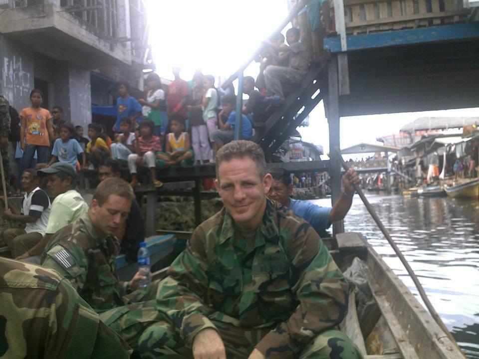

Who Is This Guy
The Conductor
Grant Whitmer is an author, a former naval officer, and a company founder and executive who got completely swept up in what's happening right now — and can hardly believe the timing.
He grew up in rural Vermont, picked up violin and guitar as a kid, and has spent much of his life on a stage — so he knew a thing or two about the power of a voice long before any of this, and even wrote a whole series about it. He went to Eastern Europe for two years right out of school and learned Hungarian; at the U.S. Naval Academy he minored in Russian and Spanish — and, he likes to add, picked up a little English along the way — then served as a naval officer. He has founded and helped lead companies (today a co-founder and board member of a nationwide lender), and founded The Windstorm Institute and Windstorm Labs — a research institute with sixteen published scientific papers, and the tech company built alongside it.
Then the tools arrived. Mesmerized by the moment, he threw himself into learning to conduct intelligence — and kept discovering abilities he had no idea he had. That's the part that still amazes him: how much dormant potential is sitting quietly in all of us, and how this one skill seems to be the key to unlocking it.
He's written books and screenplays and built software platforms — including his favorite tool, Windy Word, which he forged by voice alone, the way a Viking smelts his own sword, then sharpened on thousands of hours of real use. None of it came from a manual. There are no manuals for this yet, and no college courses — you figure it out as you go. Grant has taken that about as far as anyone, living on the cutting edge of what these tools can and can't do, and how they apply to companies, nonprofits, hospitals, and every other kind of organization.
Teaching, it turns out, is what he's always done. He coached wrestling at the Division I collegiate level, taught hundreds of people to play guitar over the years, and even wrote a book — Three Chords and a Mind — about learning to conduct intelligence the way you learn an instrument. So when friends started asking for help with these tools, coaching them was the most natural thing in the world. It grew into company webinars, in-person seminars, keynotes, and one-on-one coaching, all over the country — and he genuinely thrills at it: watching a room of people do things they never thought possible.
And as far as he's come, he'll be the first to tell you we've only begun to scratch the surface.
A few chapters
A varied road — and every stretch of it, it turns out, was practice for this.
